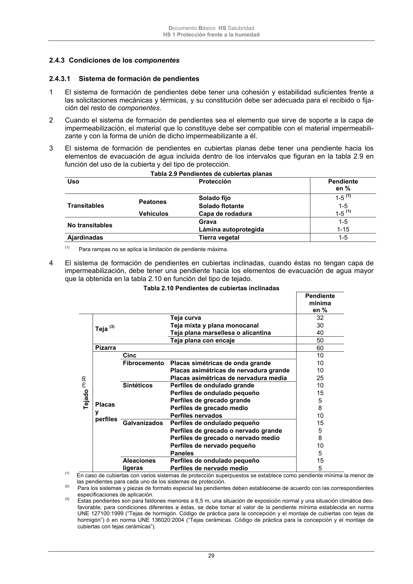

DB-HS · Página 29 · versión 2022-06-14
SHA256: 68df3caacc95f71aee2ec1ba7b2c65ae66155c21e3a8785521b8fdd4fd640d3b · página física 29 de 184 · métodos de encabezado
solo si están cotejados.
Formatos: Markdown · JSON de bloques · PDF p. 29 · imagen PNG
Documento Básico HS Salubridad HS 1 Protección frente a la humedad 29 2.4.3 Condiciones de los componentes 2.4.3.1 Sistema de formación de pendientes 1 El sistema de formación de pendientes debe tener una cohesión y estabilidad suficientes frente a las solicitaciones mecánicas y térmicas, y su constitución debe ser adecuada para el recibido o fija- ción del resto de componentes. 2 Cuando el sistema de formación de pendientes sea el elemento que sirve de soporte a la capa de impermeabilización, el material que lo constituye debe ser compatible con el material impermeabili- zante y con la forma de unión de dicho impermeabilizante a él. 3 El sistema de formación de pendientes en cubiertas planas debe tener una pendiente hacia los elementos de evacuación de agua incluida dentro de los intervalos que figuran en la tabla 2.9 en función del uso de la cubierta y del tipo de protección. Tabla 2.9 Pendientes de cubiertas planas Uso Protección Pendiente en % Transitables Peatones Solado fijo 1-5 (1) Solado flotante 1-5 Vehículos Capa de rodadura 1-5 (1) No transitables Grava 1-5 Lámina autoprotegida 1-15 Ajardinadas Tierra vegetal 1-5 (1) Para rampas no se aplica la limitación de pendiente máxima. 4 El sistema de formación de pendientes en cubiertas inclinadas, cuando éstas no tengan capa de impermeabilización, debe tener una pendiente hacia los elementos de evacuación de agua mayor que la obtenida en la tabla 2.10 en función del tipo de tejado. Tabla 2.10 Pendientes de cubiertas inclinadas Pendiente mínima en % Tejado (1) (2) Teja (3) Teja curva 32 Teja mixta y plana monocanal 30 Teja plana marsellesa o alicantina 40 Teja plana con encaje 50 Pizarra 60 Placas y perfiles Cinc 10 Fibrocemento Placas simétricas de onda grande 10 Placas asimétricas de nervadura grande 10 Placas asimétricas de nervadura media 25 Sintéticos Perfiles de ondulado grande 10 Perfiles de ondulado pequeño 15 Perfiles de grecado grande 5 Perfiles de grecado medio 8 Perfiles nervados 10 Galvanizados Perfiles de ondulado pequeño 15 Perfiles de grecado o nervado grande 5 Perfiles de grecado o nervado medio 8 Perfiles de nervado pequeño 10 Paneles 5 Aleaciones ligeras Perfiles de ondulado pequeño 15 Perfiles de nervado medio 5 (1) En caso de cubiertas con varios sistemas de protección superpuestos se establece como pendiente mínima la menor de las pendientes para cada uno de los sistemas de protección. (2) Para los sistemas y piezas de formato especial las pendientes deben establecerse de acuerdo con las correspondientes especificaciones de aplicación. (3) Estas pendientes son para faldones menores a 6,5 m, una situación de exposición normal y una situación climática des- favorable; para condiciones diferentes a éstas, se debe tomar el valor de la pendiente mínima establecida en norma UNE 127100:1999 (“Tejas de hormigón. Código de práctica para la concepción y el montaje de cubiertas con tejas de hormigón”) ó en norma UNE 136020:2004 (“Tejas cerámicas. Código de práctica para la concepción y el montaje de cubiertas con tejas cerámicas”).
